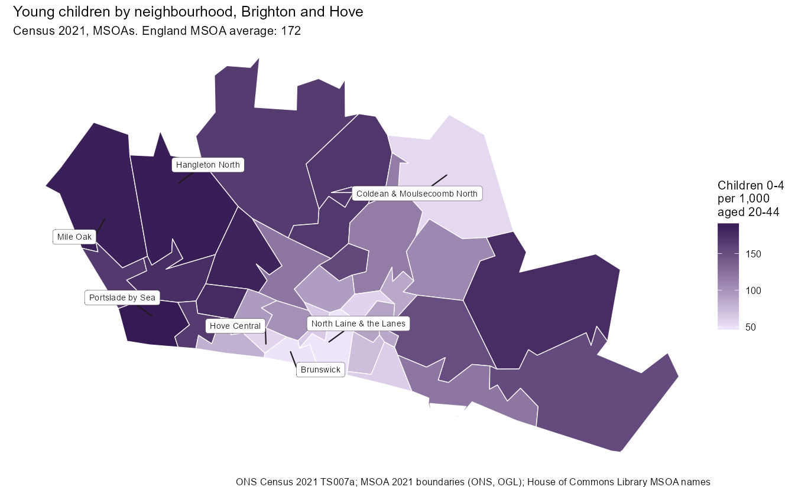
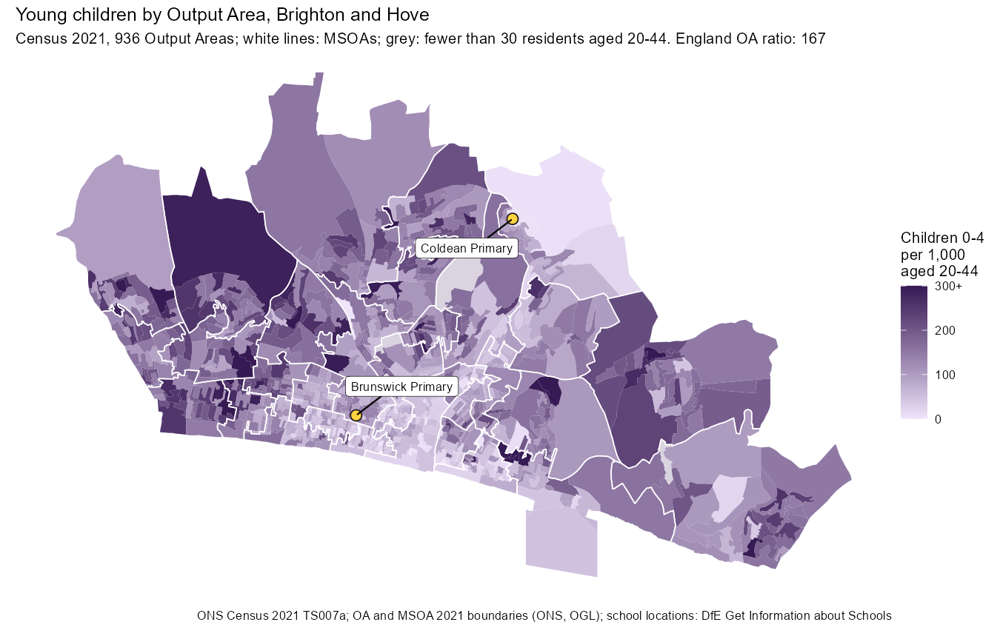
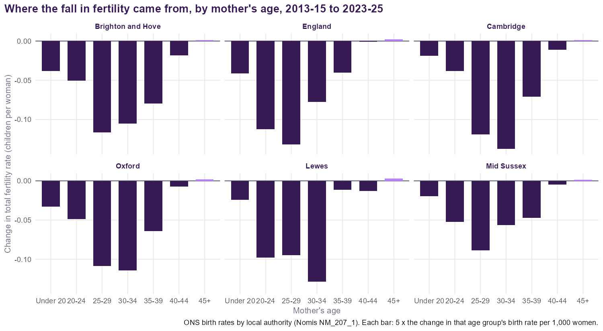
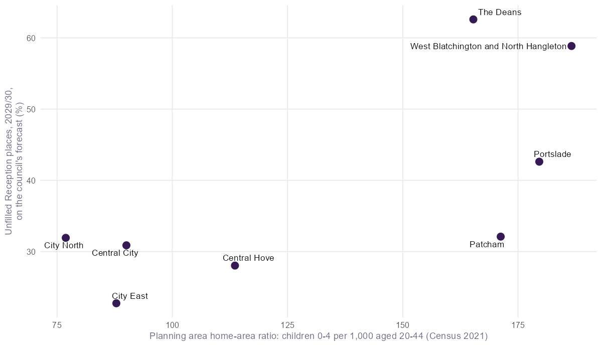
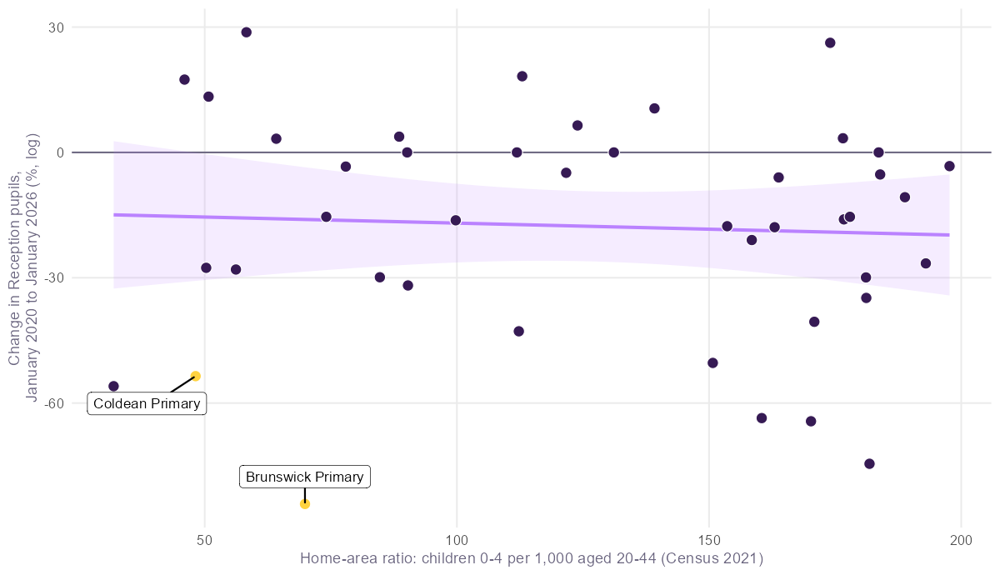

Why Brighton and Hove has so few young children
A note for the council: births, fertility, neighbourhoods and school intakes, from published data
- What it is: written for the conversation about smaller primary intakes at Brunswick and Coldean (consultation from 23 November 2026). It summarises the analysis on the pupil numbers and school places page.
- Data: published data only, from ONS, DfE and the Census. No pupil-level records are used.
- Related: what homes near good schools cost, nationally and in Brighton and Hove, is on the separate House prices near good schools site.
The council is consulting on smaller intakes at Brunswick and Coldean primaries. Councillors have put the city’s falling births down to the cost of housing. The published data support a different reading:
- why births are low: the people who live in the city;
- why they fell: a national fall;
- housing: a real but minor part of both.
That matters for planning. Housing policy is unlikely to bring births back at a scale that would refill primary places.
In short
- Brighton and Hove’s fertility is the 2nd lowest of 292 districts in England (0.98 children per woman in 2025, against 1.39), after Cambridge. The lowest-fertility places are university cities, whatever their house prices.
- The neighbours face the same prices but have far higher fertility. Lewes, Mid Sussex and Wealden have house price to earnings ratios of 10.1 to 10.7, close to the city’s 10.6. Their fertility is 1.45 to 1.58.
- Who lives in the city explains its low fertility. Across districts, five measures account for about two-thirds of the differences in fertility:
- many women with degrees;
- many women in their early twenties;
- few married couples;
- much private renting;
- the share born abroad.
- The fall since 2013 is national. Brighton and Hove fell by 0.41 children per woman, England’s typical district by 0.39. Where housing became less affordable, fertility fell no more than where it did not.
- The shortfall is in the centre of the city, including the neighbourhoods around Brunswick and Coldean primaries. The edges of the city have as many young children as England’s average.
- But few young children nearby does not predict which schools lose pupils. Across England and within the city, schools in low-child areas have not lost intake faster. The council’s own forecasts leave the emptiest places in the outer planning areas.
1. The level: who lives here
| Births per 1,000 women, 2025 | Brighton and Hove | England |
|---|---|---|
| Aged 20–24 | 8.6 | 34.8 |
| Aged 25–29 | 33.9 | 72.0 |
| Aged 30–34 | 71.5 | 94.3 |
| Aged 35–39 | 64.4 | 56.6 |
| Total fertility rate (children per woman) | 0.98 | 1.39 |
- The shortfall is almost all under 30. At 35 to 39 the city’s rate is above England’s. Mothers’ standardised mean age is 33.4 against 31.2.
- University cities have the lowest fertility, whatever their house prices: Cambridge 0.92, Brighton and Hove 0.97, Norwich 1.04 (ratio 6.8), York and Exeter 1.05, Oxford 1.06 (2023–25 averages).
- What goes with low fertility across England’s districts (Census 2021):
- Women’s education: the share of women aged 25–44 with a degree or equivalent explains 27% of the differences on its own. House prices alone explain 7%.
- The full model: adding young women’s share, partnership, private renting and the share born abroad raises this to 67%.
- Brighton and Hove’s gap with England, by measure: education −0.13 children per woman, young women’s share −0.13, few married couples −0.14, private renting −0.10, house prices −0.06, born abroad +0.05.
- Housing still counts, but as one part among several. Higher prices and more private renting both go with lower fertility once the other measures are allowed for.
More detail: Births, fertility and the cost of housing and What goes with low fertility?.
2. Where in the city
The measure: children aged 0–4 per 1,000 residents aged 20–44, by neighbourhood (Census 2021, MSOAs of about 8,000 people). The Census does not publish women by age for these areas, so this ratio stands in for a fertility rate.
| Neighbourhood | Under-fives per 1,000 aged 20–44 |
|---|---|
| North Laine & the Lanes | 47 |
| Brunswick | 47 |
| Coldean & Moulsecoomb North | 54 |
| Hove Central | 57 |
| Round Hill | 58 |
| Brighton and Hove, average of 33 neighbourhoods | 122 |
| England, average of 6,856 neighbourhoods | 172 |
| Mile Oak | 187 |
| Hangleton North | 188 |
| Portslade by Sea | 191 |
- What explains the gap: across England’s neighbourhoods, the same make-up explains 46 of the city’s 50-point gap. Many adults in their early twenties, graduates, few married couples and private renting all count; once those are allowed for, a large student population offsets part of it.
- The two primaries in the proposals: Brunswick Primary and Coldean Primary sit in two of the four neighbourhoods with the fewest young children.
- Street by street: 22% of the city’s 936 Output Areas (about 130 households each) have fewer than 60 under-fives per 1,000 adults aged 20–44, against 5% across England. The same make-up matters even between streets in the same neighbourhood.


More detail: Where in the city? and Street by street.
3. The fall: national, with a local twist
Change in the total fertility rate, 2013–15 to 2023–25:
| Area | Total | From mothers under 30 | From mothers 30 and over |
|---|---|---|---|
| England | −0.40 | −0.29 | −0.12 |
| Brighton and Hove | −0.41 | −0.21 | −0.20 |
| Cambridge | −0.39 | −0.18 | −0.22 |
| Oxford | −0.37 | −0.19 | −0.18 |
| Lewes | −0.37 | −0.22 | −0.15 |
- The size of the fall is typical. Brighton and Hove’s changes in affordability, in the share of young women and in migration of women aged 25–39 predict a fall of 0.38. It fell 0.41.
- Nothing local explains the fall, in any district. Within each district over time, these changes explain about half of one per cent of the year-to-year movement. The national year-on-year fall carries almost all of it.
- The shape of the fall is unusual. In 97% of districts most of the fall came from mothers under 30, consistent with births being put off. In Brighton and Hove, Cambridge and Oxford it splits evenly, so births at 30 to 39 fell too. In these cities, later births have not made up for fewer early ones.

More detail: Why did fertility fall? and Fewer births, or families moving away?.
4. Births, not families leaving, drive the fall in pupils
- Primary pupils, 2018/19 to 2025/26: they fell 14% (from 18,607 to 16,065). Births account for all of it. Migration and the share in state schools slightly offset it.
- The city does lose children: about 92% of each birth cohort is still living there at primary age, against 105% for England, where children arrive from abroad. That loss is long-standing, so it explains the low level, not the fall.
- Births have levelled at about 2,100 a year since 2022, from 2,952 in 2015.
5. Few young children nearby does not mean a falling intake
The method: we gave each Output Area to its nearest state primary (its home area), and compared the ratio of young children there with the change in the school’s Reception class.
- Across England, primaries in low-child areas have not lost Reception pupils faster than others in the same authority. From January 2020 to January 2026 the difference is +0.3 points per standard deviation (−0.2 to +0.8), across 13,774 schools.
- Across the city’s 44 primaries, there is no link either (correlation −0.06).
- Brunswick and Coldean have home areas among the lowest in the city (70 and 48). Their Reception classes fell from 116 to 50 and from 41 to 24. Brunswick’s fall partly follows the council’s own cuts to its admission number in 2023 and 2025. Other schools with low-child home areas have held their intakes, because they draw pupils from further away.
- The council’s own forecasts point the same way. Its 2024/25 return to DfE forecasts Reception to 2029/30 by planning area. It leaves the most unfilled places in the outer areas, which have plenty of young children:
| Planning area | Under-fives per 1,000 aged 20–44 | Reception 2024/25 | Forecast 2029/30 | Unfilled places 2029/30 |
|---|---|---|---|---|
| City North | 77 | 139 | 144 | 32% |
| City East | 88 | 419 | 347 | 23% |
| Central City | 90 | 444 | 365 | 31% |
| Central Hove | 114 | 613 | 487 | 28% |
| The Deans | 165 | 223 | 101 | 63% |
| Patcham | 171 | 122 | 101 | 32% |
| Portslade | 180 | 206 | 152 | 43% |
| West Blatchington and North Hangleton | 187 | 67 | 47 | 59% |


More detail: From neighbourhoods to school intakes.
What this means for planning
- Plan on births staying near today’s level. Nothing in the data suggests a local rebound. On today’s cohorts, Year 7 falls by a fifth by 2032/33, and by about a quarter by 2036/37.
- Housing policy is worth doing for its own sake, but don’t count on it to refill places. Neighbours with the same prices have half as many children again per woman. Housing explains about a third of the city’s gap and none of its fall. (On what families pay to live near good schools, see House prices near good schools: once the home and its neighbourhood are allowed for, the premium is about 1% or less.)
- Family homes in the centre may matter more than overall affordability. The low ratios are where private renting and young adults concentrate. That points to the mix of homes in the central neighbourhoods more than to prices across the city.
- Don’t read the neighbourhood map as a list of schools to shrink. Few young children nearby shows where demand is thin, not which schools will lose pupils next. Parents’ preferences, admission numbers and the planning-area forecasts matter more. On the council’s own forecasts, the emptiest places by 2029/30 are in the outer planning areas.
Caveats
- These are associations between places, not causes. They show who lives where, not why any one family does or doesn’t have children.
- The neighbourhood ratio is not a fertility rate. It counts the children living in an area, so it also reflects families moving out once they have children.
- Census 2021 was taken in March 2021, in lockdown. Some students were away from their term-time homes, and that may slightly overstate the ratio in student areas.
- The house price measure is a ratio for the whole district. Prices within the city are tested only roughly.
Sources
- ONS birth rates by local authority, 2013–2025 (Nomis NM_207_1).
- ONS House price to residence-based earnings ratio, table 5c.
- ONS mid-year population estimates, components of change (MYEB2), 2011–2025.
- Census 2021 tables TS002, TS004, TS007a, TS054, TS062 and TS067 (ONS, Nomis).
- DfE Schools, pupils and their characteristics, 2018/19–2025/26.
- House of Commons Library MSOA names.
- Brighton and Hove News, 13 November 2026, “Pupil intakes to be cut at two more schools”.
- DfE School capacity 2024/25 (local authority forecasts and place planning estimates); DfE school census, school level, January 2020 to January 2026; DfE Get Information about Schools.
- Ours: the pupil numbers and school places page (sections on fertility, Where in the city?, Street by street, Why did fertility fall? and From neighbourhoods to school intakes);
R/49–R/57in the school_value_added repository.